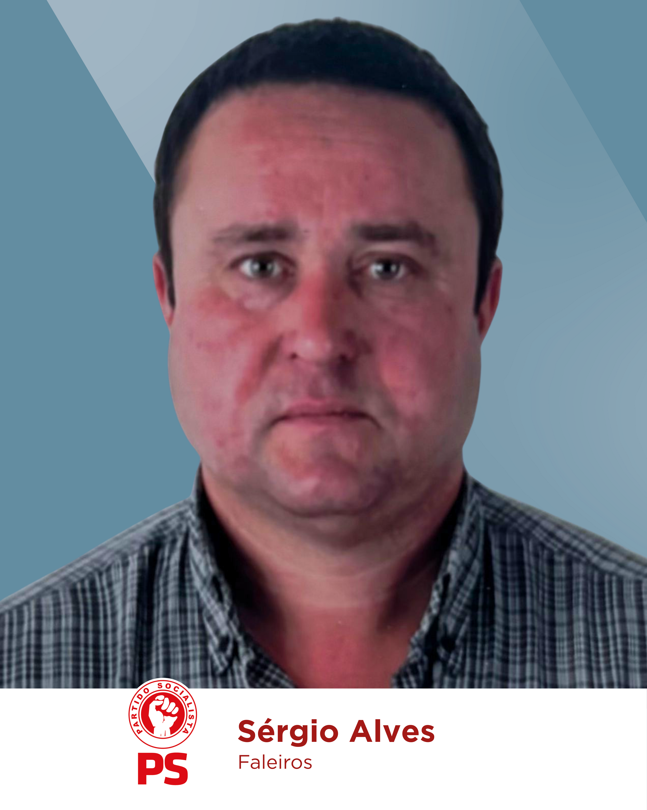
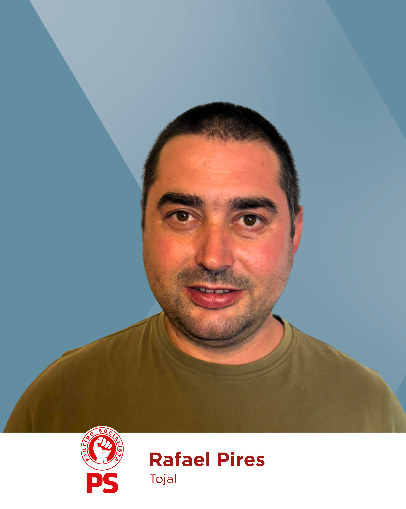
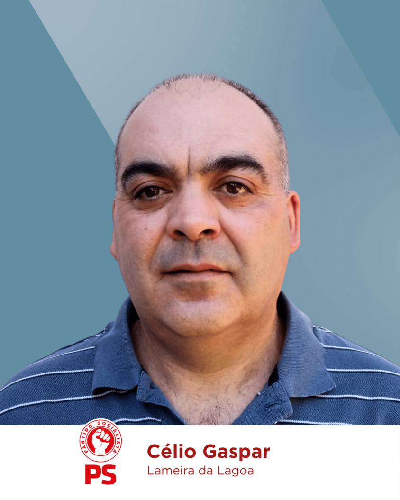

JUNTA DE FREGUESIA DO CABEÇUDO
Chamo-me Adriana Santos, tenho 28 anos e sou natural e residente na freguesia do Cabeçudo, onde cresci e onde tenho vindo a construir o meu futuro, junto da minha família. Sou licenciada em Contabilidade e Administração, e também em Gestão.
Considero-me uma pessoa ativa, lutadora e próxima das pessoas, e foi esse espírito que me levou, há quatro anos, a aceitar o desafio de representar a Freguesia do Cabeçudo, com dedicação, energia e a convicção de que podíamos construir uma freguesia mais próxima das pessoas.
Hoje, com a experiência de quatro anos de trabalho, volto a recandidatar-me com a mesma paixão, mas também com a confiança acrescida de quem conhece melhor a realidade, os desafios e as soluções para o nosso Cabeçudo.
Nestes 4 anos demos passos muito importantes, e estes resultados só foram possíveis graças a uma equipa empenhada e a uma relação próxima com a nossa população.
Agora, apresento-me novamente com uma equipa dinâmica e motivada, pronta para continuar este caminho. O nosso compromisso mantém-se claro: uma Junta de Freguesia ao serviço das pessoas, com respostas rápidas, humanas e eficazes. Queremos dar continuidade ao trabalho iniciado, mas também lançar novos projetos que tragam mais qualidade de vida, dinamismo e orgulho a toda a população.
O Cabeçudo é uma terra com identidade, potencial e futuro. É com essa determinação que me recandidato: para continuar a transformar, inovar e valorizar a nossa freguesia.
Este é um projeto de união, dedicação e esperança.
Juntos, vamos construir o futuro do Cabeçudo!
JUNTOS, temos Força para Avançar!



Programa
REPRESENTAÇÃO E APOIO À POPULAÇÃO
-
 Representar e defender os interesses das populações junto da Câmara Municipal e de outras entidades públicas.
Representar e defender os interesses das populações junto da Câmara Municipal e de outras entidades públicas.
-
Reforçar o apoio às coletividades e associações locais, promovendo a valorização e seu contributo indispensável para o desenvolvimento de atividades sociais, recreativas, desportivas e culturais.
-
Promoção de formações gratuitas, estimulando o conhecimento e a capacitação da população.
-
Realização regular de eventos culturais, promovendo a identidade local e o envolvimento comunitário.
ESPAÇOS PÚBLICOS E EQUIPAMENTOS
-
Criação da Zona de Lazer do Santo Estêvão, um espaço moderno e atrativo para promover o convívio e o bem-estar da população.
-
Recuperação do edifício da antiga pré-escola, devolvendo utilidade a um espaço com valor para a comunidade.
-
Programa de valorização do espaço público, incluindo a pintura de muros e pequenas intervenções de embelezamento urbano.
-
Melhoramento do espaço exterior da escola, criando condições mais adequadas e seguras para crianças.
-
Criação de novas áreas de estacionamento junto ao cemitério.
PATRIMÓNIO E IDENTIDADE LOCAL
-
Requalificação dos fontanários tradicionais, preservando a identidade e o património cultural dos nossos lugares.
-
Requalificação e preservação da Calçada na Rua Comendador José Maria Bravo Serra.
-
Colocação de pontos informativos no Cabeçudo para valorizar a história e promover a divulgação da freguesia.
-
Construção de um Memorial no Cemitério do Eucalipto do Cabeçudo, símbolo da nossa história e identidade.
INFRAESTRUTURAS E MOBILIDADE
-
Execução de obras de alcatroamento, garantindo estradas em melhores condições de circulação.
-
Requalificação das paragens dos transportes públicos.
-
Instalação de postos de carregamento elétrico, preparando a freguesia para os desafios da mobilidade sustentável.
AMBIENTE E FLORESTAS
-
Beneficiação e manutenção dos estradões florestais, reforçando a prevenção de incêndios e a segurança da nossa freguesia.
-
Construção de um reservatório de apoio a incêndios e incêndios florestais, reforçando a capacidade de resposta em situações de emergência.
TURISMO E ECONOMIA LOCAL
-
Dinamização da Freguesia do Cabeçudo, transformando-a num ponto de paragem estratégico na Rota Nacional 2, promovendo o turismo e a economia local.